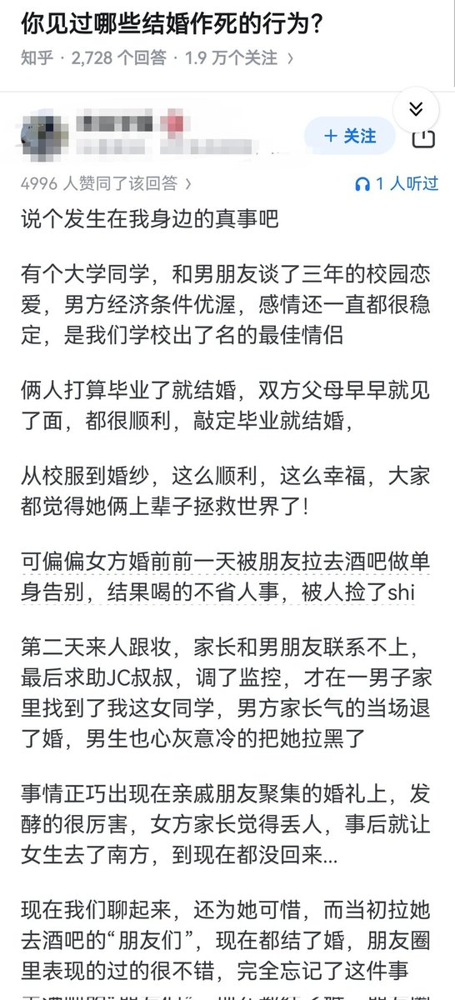

北雁冬翼（simone luxem）🏳️⚧️🏳️🌈🔬
@Simone_Luxem
槽点太多了…
谈了三年校园恋爱，感情稳定，从校服到婚纱，然后相当于自己的未婚妻被人强奸了，男方的第一反应是“心灰意冷”把未婚妻退婚拉黑？？？
不是，你们的感情哪去了？这就算是放在古代都得妥妥的人渣行为吧…
以及女方的父母，自己女儿被强奸了，反应是“觉得丢人”而不是找强奸犯干它丫的？？？

失业观察日报
@dutyge
这些“朋友”，是故意的吗？
😢 https://t.co/meLOZqAW5Y